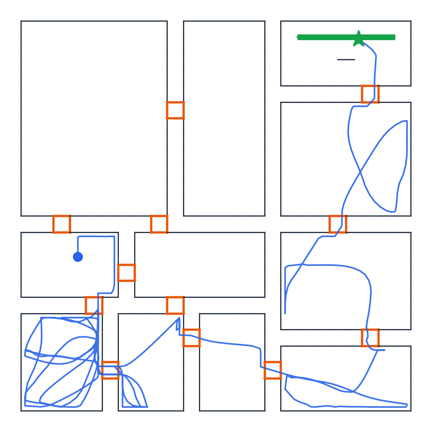

Yugaantar DevForge 2026 · Track 1 · Can it play DOOM?
DoomForge
A single 2-million-parameter recurrent network that maps unseen levels as it moves,
fetches keys, opens locks and fights, deciding in 1.6 ms on one CPU thread. Behaviour cloning
from a privileged teacher, then parallel PPO with an asymmetric critic.
+8.48
Test proxy · reference +6.11
7 / 14
categories at ≥ 80 % exits
1.6 ms
per decision · budget 40 ms
PASS
official validator
1The problem
No position, no exit marker. Observations are ego-centric rays, entities, vitals and pixels.
The exit is not a ray type or an entity, so the agent needs its own memory of where it has been.
Colour is only in pixels. Every key is just key, every lock locked door.
Fiddly doors, sparse reward. USE fires on a fresh press and reverses a moving door; the exit
reward arrives hundreds of decisions after the actions that earned it.
One CPU thread, 40 ms per decision, and the actions must come from trained parameters.
2Our answer
Give the network a memory it can read. Exact DOOM dead reckoning feeds a heading-up ego map
of what the agent has seen and where it has walked. That is perception, not planning.
Learn from a teacher, then from the game. A training-only expert with full map access
demonstrates 436 k steps; PPO then optimises the task from the agent's own view.
Measure honestly. A 14-category suite, seed-disjoint splits, paired bootstrap promotion,
one logged look at the test split.
3Architecture: one network, every decision
Rays · 64 distances + hit types
Entities · up to 32, type + pose
Vitals · health, ammo, keys, velocity
RGB · 120×160, pooled to 30×40
EgoMap · dead reckoning → 160×160 grid, 8 channels → two heading-up crops 16×32×32
Goal head predicts the current objective (exit / key / frontier) as an ego-relative vector, fused back in
→
GRU 384 memory across decisions: door timing, keys held, recent threats
Six factorised heads move 3 · strafe 3 · turn 3 · attack · use · next weapon (216 legal combinations)
Seeded sampling → 9 buttons re-seeded per map: reproducible
2,000,735 acting parameters. Training-only extras (never used to act): value head,
35 auxiliary outputs (exit visible / bearing / distance, key colours, damage), and a privileged critic.
4Memory that matches reality

Ground truth. An unseen multi-room validation map: walls, doors (orange), the agent's path (blue)
from spawn (●) to the exit (★) through six doors in 915 decisions.
seen floorwallown trailitemsfrontier
What the agent built itself, from its own observations and executed actions only: the
rooms it explored, its trail and the frontier. Turn-acceleration, per-tic friction and wall-pin modelling
keep drift at ~30 units per 500 decisions (431 before the corrections).
Every snapshot scored on validation; paired bootstrap CI > 0, no category regression; one logged test look.
PPO reward (training only)
Term
Value
Exit
+10 + 2 × time left
Key / locked door / door
+5 / +3 / +0.5
New sector / new cell
+0.3 / +0.01
Newly seen floor in the agent's own map
+0.004 / cell
Geodesic progress to the current objective
+0.003 / unit
Kill
+0.6
Damage · death
−0.02 / HP · −(6t + 4)
Standing still (< 48 units / 16 decisions)
−0.02 / step
Why each piece is there
Asymmetric critic. The value baseline sees privileged progress features (time left, geodesic
distance to the objective, keys, coverage), which gives clean advantages. It is never evaluated by the agent.
Seen-floor + stagnation terms made multi-room maps learnable. Without them the policy parked at
locked doors and in corners.
Imitation term on teacher demos keeps door and key skills from being forgotten while PPO explores.
Sampling, not argmax. Argmax of a stochastic policy freezes at ties (+1.4 proxy from sampling).
6Results on the held-out test split
reference (earlier 3-network design)DoomForge· exit rate, 10 maps each
Tier-weighted proxy (140 test episodes)
+8.48vs +6.11
paired +2.37 · 95 % CI +1.47 … +3.24
Validation, two seeds: +8.28 vs +6.11 (paired +2.17, CI +1.23 … +3.08).
Coverage on ambush / scarce-ammo / OOD maps is 3–4× the reference.
What each design choice bought
Corrected dead reckoning
drift 431 → 31 units
Heading-up ego map
BC alone solves doors + 2-key chains
Seeded sampling vs argmax
+6.38 → +7.80
Seen-floor + stagnation shaping
first exploration exits
Heavier death cost
arena deaths 8 → 5 / 10
7Rules and compliance
Every action is sampled from the trained network. There is no rule tree, planner, aimbot, router or reflex;
agent.py is map → network → sample.
Teacher, A* and distance fields live in training/, never imported by submission/.
Privileged state is used only for training rewards, labels and the critic.
env/ and validate.py synced with the latest template. Weights via Git LFS (8.4 MB).
8Limits and next steps
No exits yet on ambush, scarce-ammo, gauntlet, Freedoom and OOD maps; the agent still earns partial
credit there for coverage, kills and doors. These need far more than ~1.6 M PPO steps on a laptop.
Arena survival: half of the test arenas end in death.
Next: longer PPO at higher throughput, and a teacher that only uses what it has seen, for exploration demos.